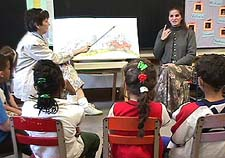
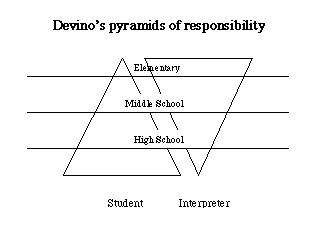

Ethics for K-12 interpretersA
David Bar-Tzur
Created 27 November 2000. Links updated monthly with the help of LinkAlarm.

Materials needed by students:
Send reading materials to the students 2 weeks beforehand (this does not include a copy of this web page, hand it out during class) and ask them to send you ethical scenarios that can be discussed in class or at least bring them when they come.
Materials needed by teacher:
handouts: this article itself, the Florida Code of Ethics for Educational Interpreters, Levin, D. (November 30, 1997). Mandated reporting of abuse, and the NAD-RID Code of Professional Conduct.
Lecture
There has been a long-standing debate among K-12 interpreters about the applicability of the RID Code of Ethics to their interpreting setting. Conservatives feel that the Code is fine just as it is, liberals feel it doesn't apply at all, and moderates feel the Code needs some modification. To the conservatives I would say that I agree that the Code of Ethics is indeed the foundation for all interpreting situations. To the liberals I would say that because it is written in such a terse form, it seems that the unique qualities of the K-12 setting pose challenges that are not explicitly dealt with in the Code. To the moderates I would say that the modifications needed are in the spirit of the original Code. As we deal with what these modifications are I hope that you the audience will be actively involved in presenting challenging scenarios, performing role-playing solutions, and giving feedback to everyone involved in this workshop. The strength of a workshop is that it is more than a lecture; it is cooperative effort where everyone concerned shapes the outcome.
One of the reasons that K-12 interpreters feel role-conflict is because they have not been previously involved in role clarification. They usually have a "slash" position such as "interpreter/tutor" or "interpreter/teacher's aide". Our first step will be to define the interpreter's role. Henceforth when I say "interpreter", I mean "a K-12 interpreter". If the interpreter can avoid performing the other roles while in the midst of the interpreting role, most ethical conflicts that come from the RID Code of Ethics can be avoided, because one is no longer "the interpreter". This won't work however with confidentiality and impartiality which apply to previous work. Gary Garafola and Sallie Bruno have delineated the roles of the members of the educational team in their Educational Interpreter's Ethics curriculum for the NY State Education Department Grant Project as follows. The clarification of each role is mine.
The K-12 interpreter has the following roles:
(1) the role of any interpreter, which is to facilitate communication by working between ASL and English. In addition, the K-12 interpreter may be called upon to use MCEs (Manual Codes for English).
(2) Trainer: the interpreter will need to train hearing and some Deaf youngsters how to use the interpreter. (a) The teacher will need to know how to help prep the interpreter for upcoming classes, projects, and presentations; what is appropriate to ask the interpreter about the Deaf students; what the job responsibilities of the interpreter are and are not. (b) The Deaf students will need to learn: to what extent the interpreter can help outside the usual interpreting role in terms of tutoring; when the two can chat; what social distance there is between the student and interpreter; how to be weaned away from dependence, which is natural when very young but must disappear as one grows older. (c) The hearing students will need to learn how and when to speak with the interpreter, who is literally and figuratively between a teacher and a student.
(3) Information specialist: Helping everyone on the educational team understand more about Deafness, Sign Language, auditory training and equipment, cultural mediation, and how to use media effectively with the Deaf students. The interpreter should also know when to refer people to specialists and how to contact them.
(4) Public relations specialist between the Deaf Education Program and the classroom. I asked Garafola and Bruno what they meant by this label and received the following explanation:
Sometimes, it is up to the interpreter to orient the classroom teacher to not only the interpreter role, but to that of the teacher of the Deaf [TOD]. Typically, teachers confuse the two roles and assume interpreters do what teachers of the Deaf do, and vice versa. The interpreter may have to explain why the child has to leave the room daily to see the TOD. Hopefully, the teacher of the Deaf will orient the classroom teacher about this, and that's preferable, but in the real world it doesn't always work that way. By no means should the interpreter ever be put in the position of go-between. By this I mean, the classroom teacher should not expect the interpreter to relay to the TOD what is being taught in the classroom, homework assignments, page numbers, etc. And the TOD should not expect the interpreter to do his/her demanding job with one hand while writing down a homework assignment with the other! Rather, the two of them should be in direct contact with each other.
(5) Secondary expected roles: aide, teacher's assistant, and tutor. This group of expectations should be spelled out in the contract which should be read carefully and clarified so that the interpreter knows what to expect. It may happen that others on the education team may ask things of the interpreter which are not in the contract or did not seem to be mentioned. This has to be clarified with all concerned.
Elizabeth Winston, who is working on a book on this topic, believes that a K-12 interpreter should be called an "Educational Accessibility Specialist" or EAS because of the multiplicity of roles.
Here are the roles of the other members of the educational team. (Remember you're on the team too!)
The classroom teacher preps in order to teach, delivers lectures, coordinates projects and outings, keeps control of the classroom in general, disciplines inappropriate behavior, and grades assignments and tests.
The notetaker (selected from Monroe #1 BOCES job description):
 arrives early and is prepared with paper, pens, and required books.
arrives early and is prepared with paper, pens, and required books.
familiarizes self with course of study to facilitate notetaking procedure. Keeps up with daily work: English novels, vocabulary, historical dates, etc.
records clear, concise notes in quadruplicate, including assignments for homework, highlights of topics covered, and significant points relating to notes (as outlined in notetaker training manual).
supplies student, teachers, and support service personnel with a daily copy of notes, handouts, tests, etc.
maintains diplomatic working relationships with teachers, parents, students, and other support service personnel.
uses discretion in matters of confidentiality and reporting incidents or concerns to support staff: i.e. student abusing or ignoring services.
meets with involved teachers, parents, and support service personnel when appropriate.
gives knowledgeable responses to teachers' and students' questions regarding deafness or refer to an appropriate source for further information.
determines ways to use non-classroom time productively.
attends scheduled notetaker and deaf education staff meetings.
participates in professional development activities (i.e. sign language courses, notetaker training, seminars, etc.).
The psychologist evaluates the need for and delivers or refers students to
appropriate therapy.
The speech therapist helps the students achieve their maximum ability to use speech and speechreading skills.
The teacher of the deaf/hard of hearing delivers supportive education to the deaf and hard-of-hearing students in a way that is most effective following the IEP and given their hearing and learning status, so that the student(s) will be as fully included in the educational environment as possible. S/he facilitates the students' learning about Deaf culture in order to foster a sense of Deaf identity if each student so chooses.
Parents should be intimately involved in all aspects of their children's
education. Unfortunately, most choose, or feel compelled, to leave it to
the "experts".
The guidance counselor guides the students in the right
direction for their educational process. S/he works directly with, or refers students to experts, if students get off task or are troubled.
The special education teacher acts as an advocate to make sure that special needs are met.
Students apply themselves to become self-actualized. They are awkward at that age and therefore need guidance, just as all young people do, to be independent and in charge of their education as much as possible during the different ages of growth and development. They will be typical children and teenagers - partially responsible and partially irresponsible.
The reading specialist provides tools to ensure the students will achieve maximal skill in reading.
There is a paragraph in Garafola and Bruno's introduction to their Ethics curriculum which is so well put, I would like to quote it in full:
Ethical behavior of role definition in the educational setting protects everyone's rights. The Deaf students have the right to privacy. They also have the right to be educated by experts. . . not their interpreters. The rights of the classroom teachers are also protected; confidentiality prevents us from discussing their teaching methods, lesson plans, etc. with other staff members. CSEA members [Civil Service Employees' Association] are also protected: their jobs will be protected because we won't be doing their job of filing, typing, xeroxing, etc. Finally, the interpreter is protected because we will not be working in areas beyond our expertise. Clear role definition allows us to function in our highly technical field which is both physically and intellectually demanding. Giving us duties outside of interpreting implies what we do, as interpreters, is not enough to warrant our being at the school. This weakens and undermines the professional level of interpreting.
DeVino has developed an excellent representation of the gradual weaning away of dependency of the Deaf student on the interpreter which is shown below:

At first, when the Deaf students are in elementary school, they are extremely dependent on their teachers and interpreters to guide them in executing their responsibilities towards paying attention in class, not disrupting, and doing their class work. As the students grow older and more mature, the interpreter follows the example of what the ideal teacher does, which is to let go of this responsibility and leave it to the student to do the right thing. For this reason, the interpreter should not feel conflicted while tutoring or when asked for further explanation of a given concept. If the student wants to know the tutor/interpreter's personal opinion, it should be handled the same way a teacher would handle it. Teachers usually avoid giving too much personal opinion so that the students can come to their own conclusion, but it can be helpful to explain some of the various opposing views. For example, if the student asks your opinion on the Vietnam War, you could say, "It's important for you to learn different viewpoints, but just as the teacher will avoid giving you his/her personal opinion, I avoid it so that you can decide for yourself." It is appropriate, however, to defend school policies and the interpreter's various roles to students.
This workshop goes through the old RID Code of Ethics item by item, adding to it from what other codes and thinkers have proposed. I would like someday to update this with the NAD-RID Code of Professional Conduct. The first tenet reads: "Confidentiality - Interpreters/Transliterators shall keep all assignment-related information strictly confidential." Since a K-12 interpreter works so closely with the educational team where information sharing is commonplace, other team members expect an interpreter to freely share any information that has been gathered as part of his/her work. Although a team member would not share information on a student with a member from another team that doesn't deal with that specific student, it is difficult for a team member to understand why an interpreter can't share what they have learned about a student they have in common if it is learned during an interpreting assignment. The reason behind this is that the students needs to develop trust in the interpreter, in terms of skill and that the student can express their inner feelings without thinking that it will be gossiped to others. There are limits to this confidentiality, as we shall see.
The Florida Code of Ethics for Educational Interpreters expands this tenet to read:
Interpreters/Transliterators may discuss assignment-related information only with other teachers and supervisors who are directly responsible for the educational program of the deaf/Hard of Hearing children for whom the interpreter interprets/transliterates.
Guidelines:
Interpreters/Transliterators at the elementary and secondary levels are often assuming the primary role of interpreter and tutor. In this capacity the interpreter/transliterator functions as a support service provider on the educational team who answers directly to the teachers who are responsible for the child's functioning in the interpreting situation on a regular basis with the supervising teachers and/or designated administration.
This tenet is often viewed as the most problematic for the educational setting. K-12 interpreters feel conflicted when they need to share information with other members of the educational team, since they feel it violates confidentiality. A good deal of the problem arises from interpreters failing to see that they have a number of roles (as we have discussed above), and that if they are kept separate, no conflict with the Code of Ethics arises. This means that it should be clear to the Deaf and hearing students, members of the educational team, and most of all to the interpreters themselves when one has the role of interpreter, and when one is being a tutor, a trainer, an information specialist, and so on. This role clarification should be thought out carefully by the interpreter, and then communicated to other concerned parties before a seeming conflict can occur.
[Ask class:] Why is it that confidentiality is so important with professionals, such as: doctors, lawyers, and spiritual leaders? [If they hesitate, ask, "Why would you object if any of these professionals told others about you, especially by name, without any good reason for doing so?]
[Answer:] An important element behind the requirement of confidentiality is that of trust. When a patient tells a doctor about how they contracted an STD, when a client tells a lawyer the details behind their crime, and when a penitent tells their religious leader about sinful activities, they don't want anyone else to know about their private life if it can be avoided. For Deaf people, these intimate moments and many more neutral events are shared with an interpreter.
If the Deaf person had to worry about an interpreter disclosing what the Deaf person had said in confidence, they would fear to be honest, which would not allow them to get the help they needed. Although not all interpreter theorists agree on this (the most prominent of which is Elizabeth Winston), I would agree with the Florida Code that interpreters need to share information with other members of the educational team. To keep the trust of the Deaf students, the interpreter should explain this to the educational team and why it is so. Everything should be shared on a need-to-know basis. Do you need to tell this team member this bit of information about this student? Are all the details you are about to say essential for the purpose at hand? If not, don't share them. Also keep in mind that you will rarely learn about private matters such as abuse or drug use from the student during the actual interpreting process. It will usually occur during your other roles as tutor or during off-moments. For this reason, when the students begin to share such things, remind them that an interpreter must report child abuse (mandate reporting). The interpreter will have to speak with the school on their policy regarding reporting when students informs you that they will do or have done things that are a danger to themselves (suicide or illegal drugs) or others. Not all interpreters agree that this should be reported, but personally I feel we should because we are part of an educational team and that we have an ethical duty when the student is under age.
Mandated reporting
{The teacher should distribute Mandated reporting of abuse, which is quite general or use a search engine to find similar articles for the state the workshop is being given in. Discuss what is considered mandated reporting in your state and what the rationale is for breaking confidentiality.}
Abuse presents a great impediment to a child's learning. Interpreters usually receive training in mandated reporting and may be given symptoms to look for that show up before any physical evidence might be noted. A child may trust an interpreter more than other staff and certainly may be able to communicate better with an interpreter than others at school. I once interpreted for a medical appointment where to me it was obvious that the patient was going downhill fast. When the examination was over, they were going to send the patient back to the nursing home, and I told them that judging from a layman's perspective, they needed to send the patient to the emergency room stat (immediately). Fortunately the doctor's office was in a professional building adjacent to the hospital, so this was a simple procedure. The reason that I believed this happened was that hearing people often feel they can not read the facial expressions and body language of Deaf people because they are unsure if that is simply part of their "language", although we as interpreters feel that it should be patently obvious to them. My point is that this may happen with school staff also, and they may overlook what would be obvious to them if the student were hearing.
First, some general comment on mandated reporting and then some specifics on New York State, in which this workshop is being presented. These remarks are drawn from the articles listed above. Mandated reporting is not Federal law but varies from state to state, but all states have regulations. Many states list mandated reporters as follows: physicians, psychiatrists, psychologists, mental health workers, nurses, social workers, police officers, teachers, and school employees. K-12 interpreters obviously fit into the last category. Interpreters who work for a hospital or mental health facilities may be mandated reporters, but freelance interpreters are not named explicitly. It is not for the interpreter to decide if they have enough evidence; the report is required if you have a "reasonable suspicion" of abuse. It does not matter if others on the educational team or the team as a whole feel there is nothing to report, only what the interpreter reasonably believes. The first tenet of the RID Code of Ethics (confidentiality) will not stand up in court as a reason for not disclosing or testifying to what one knows. You cannot be found liable if your report is unfounded. Failure to comply with the law is a crime.
In New York, suspicions of child abuse or abuse of one parent by another should be reported to the principal. Each new or additional incident must be reported whether or not previous reports have been made. The principal must inform you within one school day that a report was filed and give you the SCR (New York State Central Register for Child Abuse and Maltreatment) report number. If s/he does not, you are required to call the hotline run by the SCR in Albany (1-800-635-1522) and alert your UFT (United Federation of Teachers) chapter leader. This will remove any liability from you for failing to report.
The report is a request to the ACS for an investigation. One must also report neglect as well as abuse. Mandated reporters for New York State are listed in the United Federation of Teachers' report as school personnel, police officers, physicians and registered nurses. You must also report any statements from a parent, guardian, custodian or other person legally responsible for the child, that would indicate abuse. States vary, but in New York State, if you don't report it, you may receive disciplinary action from the Board of Education, civil liability for all damages inflicted upon or suffered by the child and caused by your failure to report, and criminal charges of a Class A misdemeanor punishable by up to one year in jail and a fine.
[The teacher can ask the students at this point if they have anything to add to these comment from personal experience.]
We have now concluded our discussion of confidentiality, if there are no questions. After each tenet of the Code of Ethics is discussed, we will deal with case studies. [The teacher should have requested case studies to be sent in before the workshop begins, so that the author can be anonymous if desired, but there is no reason that students can't bring up other ones in class.] I'd like first to discuss situations you have dealt with yourself, or ones you could imagine happening, because this workshop should fit your needs. Please remember the first tenet, which we will deal with now, confidentiality. Don't reveal details that might identify who the consumers were. Only tell us things we need to know to deal with the scenario. Think of each detail on a need-to-know basis. Why do we need to know that it was a biology class? Could you just say a science class, or let the details speak for themselves? Don't mention anyone's name, the name of the school, or what year it happened. If other people already know or can guess who is involved, they should keep it to themselves.
I will add other case studies if necessary and time permitting. If these remind you of other situations, wait until that scenario is done, and then ask about your example. You can talk about what you did in the situation, what you wish you did in the situation, what others told you that you should have done, and so on. For each scenario, we will have students role play it before we discuss it. This is important because it is not only important what you will say, but how you will say it. Don't break character in the middle of the role play to ask questions, so that the scenario seems as believeable as possible. We will discuss the role play afterwards and anyone can ask questions. Does anyone have an ethical situation?
CASE STUDIES
[For each section with case studies, the teacher should select whichever cases to add to what the students have provided themselves. Obviously the teacher can add experiences of her/his own. For the full reference to Cartwright's work, from which case studies are taken, see the resource list at the end of this web page. Actually role play the situations you choose with the students playing the interpreter, and if the situation involves a Deaf person, use ASL. Don't let the students get away with talking about what they would say, make them role play it. This is because most people can figure out what they should say, but the important thing is how they will say it. After the role play, discuss with all the students how the situation was handled. Was there a way this whole scenario could have been avoided?]
 The high school student you interpret for likes to think he's part of the "in" crowd. He often tells you about drugs being passed around at the parties he attends. He does in fact hang out with a rough crowd, so maybe his stories are true. One day the school principal approaches you and tells you the Deaf student and a group of his friends have been picked up by the cops for selling drugs. The principal asks if you know anything about the student using drugs. (Cartwright, p. 72, scenario 78) When this has been role played, continue it with another student and you be the Deaf student complaining that the interpreter broke confidentiality. Could this have been avoided?
The high school student you interpret for likes to think he's part of the "in" crowd. He often tells you about drugs being passed around at the parties he attends. He does in fact hang out with a rough crowd, so maybe his stories are true. One day the school principal approaches you and tells you the Deaf student and a group of his friends have been picked up by the cops for selling drugs. The principal asks if you know anything about the student using drugs. (Cartwright, p. 72, scenario 78) When this has been role played, continue it with another student and you be the Deaf student complaining that the interpreter broke confidentiality. Could this have been avoided?
You are interpreting a phone conversation for a high school senior. She is calling a taxi because she is planning to leave school that morning and visit her boyfriend's school. She has not informed any one of these plans and you only found out about them through the course of the interpreted phone conversation. Should you inform anyone that she is intending to cut out of school for the day? If so, role play what you will say. (Garafola and Bruno)
You have been interpreting for a very popular Deaf girl attending weekly counseling sessions in school. She has recently gotten pregnant and is seeking information about how to get an abortion. One day her parents come to school specifically to see the girl's counselor, but she's out sick that day, so the principal calls you in to talk to them instead. (Cartwright, p. 180, scenario 782)
You interpret for a student who generally falls asleep during class. When you feel he is definitely out of it, you stop interpreting, When the Deaf student wakes up, he asks why you didn't continue interpreting. He says that by stopping you let the teacher know he was not paying attention. He accuses you of breaking confidentiality. (Adapted from Cartwright, p. 181, scenario 794)
You notice that one of the students signs an answer to one of the questions on the test everyone is taking. The teacher was writing something on the board and did not see this. (Garafola and Bruno)
You're walking down the hall at school with another interpreter who yells at one of the teachers, "Good luck with Frank (her former client) in Algebra II. We almost flunked Algebra I last year!" (Cartwright p. 81, scenario 138) What would you say, if anything, to the other interpreter?
You interpret for a Deaf second-grader that comes to school with a large bruise on his cheek. When the teacher asks him what happened, he says he fell out of a tree. But during the course of the day, you notice that this usually bright, happy child is having trouble paying attention and gets the shakes. During recess, the little boy comes up to you and starts crying and says his dad came home drunk last night and hit him and his mother. His dad has threatened him if he tells anyone, so now he's afraid to go home. (Cartwright p. 188, scenario 841)
Here are other case studies on this tenet in Cartwright (see "resources" at end of this handout for the full reference); the number before the colon (":") represents the page number and the one afterwards is the scenario number:
53:97 (modify to K-12); 72:78, 80; 73:83, 85; 74:92, 93; 78:117; 80:133; 81:138; 125:436; 180:792; 188:842.
The second tenet in the RID Code of Ethics is called "faithful rendition": "Interpreters/Transliterators shall render the message faithfully, always conveying the content and spirit of the speaker using language most readily understood by the person(s) whom they serve."
The Florida Code of Ethics for Educational Interpreters leaves this tenet as it is and adds the following guidelines:
It is the interpreters'/transliterators' responsibility to transmit the message as it was intended. Short clarifications of presented material may be done throughout the presentation; but if explanation is required, this should be done at a later time, by the classroom teacher or the interpreter/transliterator. When interpreting/transliterating from spoken English to sign, the educational Interpreter will communicate in the manner most easily understood by the student(s). When working from sign to spoken language, the interpreter will speak the language used by the hearing person.
Faithful rendition means that the interpreter will not delete, substitute or add anything to the message that is being taken in by eye or ear. This does not mean that the interpreter must say or sign word-for-word or sign-for-sign, but that the message that the receiver gets should be what the sender meant for him/her to get. Since Deaf students do not always get an equivalent education, due to lack of access to everyday conversations, incompetent interpreters and Teachers of the Deaf, and some uncaptioned media, the student may not be able to handle the teacher's information as is. The solution to this is to inform the teachers of any lack in the student's education as it becomes known and under the guidance of the teachers, modify the interpretation to be more explanatory when possible, as well as dealing with it during tutorials. When the school district rules that a given sign system be used and not ASL or a contact language (a normally occurring mixture of Sign English and ASL), the Deaf student will often not receive a faithful rendition since it will be difficult to visualize. This should also be discussed with the educational team and resolved to the best of everyone's ability.
CASE STUDIES
You are interpreting for an athletic team's practice after school. One of the teammates calls out a dirty word while the coach is speaking and you are interpreting. The coach asks you not to interpret it. (Garafola and Bruno) What would you do if you were walking with the Deaf student (this is not an interpreted event) and a hearing kid comes up to the Deaf student and says something dirty? Does it make a difference? Would the age of the children make a difference?
You will interpret tomorrow for a heated debate on whether rapists should ever be released from prison and if so, how to handle it. You feel so strongly about this topic you feel you will not be able to interpret for it without showing your bias. What do you do? Actually role play this to the principal or teacher who has just asked you to do this. (Bar-Tzur)
In the biology class where you interpret, the teacher is doing a science demonstration that involves blowing into a straw and pushing air and water into the sand. A student from the back of the room makes a comment about the teacher's "blow job". You can see all the student eye's turn to you to see your reaction and how'll you'll sign it. (Cartwright, p. 1, scenario 1)
You are interpreting for a child in French class and the student wants to learn to pronounce the words correctly but every time she tries to say something the other children laugh at her. She is unaware of this because of her profound hearing loss. Should you inform the student that the children are laughing, since you know that she is very sensitive about her voice and may stop trying if she know they are laughing? (Bar-Tzur)
You're interpreting in a high school class where the teacher is lecturing and writing on the board. All of a sudden, the chalk makes that awful screeching sound it sometimes makes and everyone in the class, including you, jumps. The Deaf student is insistent you explain what just happened, but meanwhile the teacher has resumed lecturing. (Cartwright, p. 111, scenario 345)
You're scheduled to interpret an IEPC meeting for the Deaf parents of an elementary student. The parents have brought two hearing family members with them for support who can also sign. While the meeting is going on, the family continually has little side conversations going on, signing back and forth. You start to voice these conversations as well, and the two hearing family members insist you stop because they're "private" conversations. (Cartwright, p. 111, scenario 347)
You interpret for a very shy Deaf boy who is a freshman in high school. The boy's history teacher is notorious for putting down students. He tells his students things like, "If you read the chapter, you wouldn't give me such stupid answers." One day the Deaf student raises his hand to answer a question. He's nervous and signs the wrong answer. You know the teacher is going to put him down if you voice the date wrong, when you're sure he just transposed the numbers. (Cartwright p. 181, scenario 795)
Here are other case studies on this tenet in Cartwright (see "resources" at end of this handout for the full reference); the number before the colon (":") represents the page number and the one afterwards is the scenario number:
26:48; 27:49; 110:339; 138:523; 184:814; 185:823; 187:839; 188:840 189:846.
The third tenet in the RID Code of Ethics is called "impartiality": "Interpreters/Transliterators shall not counsel, advise or interject personal opinions."
The Florida Code of Ethics for Educational Interpreters modifies this tenet to read:
Under the direction of the subject area teacher, the interpreter/transliterator may tutor deaf/hard of hearing students and assist them to better comprehend the presented material. The interpreter should direct students to an appropriate person for the advice they seek.
Guidelines:
In the educational setting the interpreter often assumes the dual role of interpreter/tutor. The interpreter is to interpret the message faithfully during the actual interpreted sessions but she/he may tutor and assist after the interpreting sessions have been completed. Exactly what is to be done and how tutoring is to occur will be at the discretion of the classroom teacher. The interpreter/transliterator will direct their activities depending on the classroom teacher's directions and the teaching materials the teacher provides the interpreter to use while tutoring. The interpreter will not be required to devise teaching materials or follow-up activities for deaf/hard of hearing students without input from the classroom teacher.
We have not mentioned the National Association of the Deaf (NAD) Code of Ethics to this point, and most of it is very similar to the RID Code of Ethics. There are three tenets that are not included in the RID Code and I will mention them here because two of them are often thought to go against impartiality. NAD tenet 6: "Information on the role and appropriate use of interpreting services shall be provided to the consumers when necessary." So if in the middle of an interpreting situation one of the hearing consumers asks you a personal question about the Deaf person, it is totally all right to explain your role. This is often referred to by interpreters as "stepping out of role", but I agree with the NAD that this is part of our role. NAD tenet 7: "Information on available resources as appropriate should be provided." So if the participants in an interpreted event seem to be unaware of a resource that would help them with a problem that was discussed, it's okay to tell them about it afterwards. It is not advising if you simply say such a resource exists, at least in the eyes of the NAD, and I agree. [Ask participants:] What is the difference between this and NAD Tenet 6? NAD tenet 9: "Respect of and for the deaf person's rights must always be evident." This is good advice in any situation.
CASE STUDIES:
You're an interpreter for a preschool class, and one of the little Deaf girls is still struggling with toilet training. She has been promised a trip to Cedar Point if she doesn't wet her pants today. The class takes a field trip to the zoo. When everyone stops for a potty break, this girl doesn't go because she wants to see the monkeys first. Sure enough, she wets her pants, and she starts to cry when she realized she won't be able to go to Cedar Point now. You could rinse out her clothes and hope they dry before the end of the day; then no one would need to know. (Cartwright, p. 48, scenario 88) What would you do? Why are some tempted to help out Deaf students when they are not so moved with hearing children? What would be gained by doing this? What would be lost?
While interpreting a videotape at school, you find yourself moved to tears. The story is very powerful and moving, but more than that, it's that time of month and you're very emotional anyway. Everyone is looking at you standing there with tears running down your face. (Cartwright, p. 63, scenario 13) Have you done something wrong? How do you regain your professional standing with the kids later?
You're an attractive young female who has recently gotten a job interpreting at a high school. One of the Deaf students is a muscular, attractive, young man involved in several sports. One afternoon while you're waiting outside for your ride after school, he approaches you and makes a romantic overture. You tell him that his behavior is not appropriate. Fortunately, your ride pulls up and you leave. The student doesn't take the hint and he won't take no for an answer. He keeps bothering you. (Cartwright, p. 66, scenario 33) What do you do?
A high school class that you interpret is discussing Mormons, a religion that happens to be the one you were raised in. He's really mutilating the fundamental beliefs of your religion. The bottom line is, some of the things he's attributing to your religion are just not true. (Cartwright, p. 95, scenario 241) What do you do? How do you cope?
Over the last three months, you begin to notice your Deaf student is steadily losing weight. After lunch you walk into the bathroom and hear someone throwing up. Out of concern, you wait around to see if you can be of any assistance. Out walks the Deaf student, and when you ask her if she's okay, she says lunch just didn't agree with her and she's fine now. You can't help thinking she might be bulimic. (Cartwright, p. 96, scenario 247) What should you do if anything?
You get parental permission to take a Deaf student to an NTD [National Theater of the Deaf] performance. When you go to the student's home on Sunday to pick her up, you're overwhelmed by the awful stench when you walk in the house. The house is filthy, the student's hair is matted, and she's wearing the same clothes you saw her wearing on Friday. (Cartwright, p. 99, scenario 265) What would you do?
In a high school class, the Deaf student you interpret for continuously picks on a student he considers his inferior. The teacher sees the Deaf student constantly shoving and picking on the kid but never says anything, obviously assuming that it your job. The poor kid is afraid to tell on the Deaf student for fear it will only make things worse. (Cartwright, p. 179, scenario 781) What would you do?
There are two Deaf students in the high school class where you're interpreting, and when they get together, they do more talking than paying attention. You interpret anyway, it's their choice, but right now the teacher is discussing what will be on next week's exam and neither one is paying attention. (Cartwright, p. 180, scenario 787) What would you do? What would be gained? What would be lost?
During lunch duty, you've noticed that the 6-year-old elementary student you interpret for doesn't know how to use his eating utensils properly. During the child's IEPC, the teacher doesn't bring it up. You feel it's important but you're interpreting the meeting for the child's Deaf parents and are not asked to participate. (Cartwright, p. 185, scenario 824) Should you express your opinion? When and how?
Here are other case studies on this tenet in Cartwright (see "resources" at end of this handout for the full reference); the number before the colon (":") represents the page number and the one afterwards is the scenario number:
12:20; 18:32; 30:57; 32:59; 50:92; 53:98; 68:48; 95:238; 97:248-51, 255; 98:261; 99:263, 267, 269; 100:273-274; 101:276, 278-80; 102:286,; 136:508; 137:515; 138:519; 141:541; 179:785; 191:796-97; 183:811.
The fourth tenet in the RID Code of Ethics is called "discretion": "Interpreters/Transliterators shall accept assignments using discretion with regard to skill, setting, and the consumers involved."
The Florida Code of Ethics for Educational Interpreters expands this tenet to read:
Interpreters/Transliterators in the educational setting shall accept employment for which they are qualified, based on their certification level on the RID evaluation, QA screening or the Florida Educational Evaluation.
K-12 interpreters are grossly underpaid, just as K-12 teachers are. This is where the best interpreters (as well as the best teachers) should be. Society talks a good talk about valuing the education of children, but doesn't really follow through in terms of putting their money where their mouth is. For this reason, many K-12 interpreters are undereducated, undermotivated and undersupported. These interpreters need to understand how to parallel teach and how to tutor, but don't usually receive training in these skills. They may interpret topics that they don't understand, which leads to less than ideal interpretations, since interpretation should represent meaning. Since interpreters are part of an education team, the other members (especially the teacher) should do everything in their power to assist the interpreters in preparation. The lesson plan and other activity plans should be given to the interpreters ahead of time so that they can understand the content and learn how to express it in ASL, which is more than just learning new signs. It would be nice if interpreters were placed according to their strengths and helped to ameliorate their weaknesses. Interpreters should also make their needs known to do the best job possible. For more information on preparing for assignments, click the home page icon at the bottom of this web page: most of the pages at this site are all about preparation.
CASE STUDIES:
The students are all doing seatwork. Many of the students are in need of assistance from the teacher and are waiting to get her/his attention. The Deaf student asks for your help. Would it be different if it were a hearing student? Why or why not? (Garafola and Bruno)
You are assigned to interpret the science club meeting after school. While interpreting group work, another interpreter walks into the classroom and begins talking to the teacher. You overhear her say that she wants to interpret the club from now on since she has a background in science. She stays at the meeting and throws technical signs to you. (Garafola and Bruno)
A student in one of your classes complains about an interpreter in another class and says he wishes you would interpret for that class too. You feel that the subject matter for the other class is way beyond you. How do you handle this? (Bar-Tzur)
It's time to interpret at your school and you find yourself suffering from a severe case of the flu. You know that chances of finding another interpreter at this late hour are minimal. You open your medicine cabinet, but the only flu medicine you have are those pills that make you sleepy. (Cartwright, p. 61, scenario 1 - modified) Why should you go? Why shouldn't you?
An elementary school in your small town is having a musical concert for their second- and third-grade students. The interpreter they usually work with for these events is sick, and so they call you to interpret the concert. You don't know a thing about music, and the concert is tonight! (Cartwright, p. 83, scenario 158)
You're offered a job as an educational interpreter at a junior high school. They told you during the interview that the school's communication policy was SEE (Signing Exact English). You were not trained in that method, and you have told them during the interview that you use ASL, but they want to hire you anyway. You say you can learn SEE. (Cartwright, p. 90, scenario 206) Is there anything improper here? What are the issues?
You interpret in a high school algebra class, which is a subject you did poorly in when you were in school. You're managing to keep up with the concepts, but now your supervisor is requesting that you also tutor the student twice a week during his resource room period. (Cartwright, p. 181, scenario 800.) What would you do?
Here are other case studies on this tenet in Cartwright (see "resources" at end of this handout for the full reference); the number before the colon (":") represents the page number and the one afterwards is the scenario number:
8:14; 36:67; 82:151; 86:179; 88:188; 91:208; 92:217-18; 184:840.
The fifth tenet in the RID Code of Ethics is called "compensation": "Interpreters/transliterators shall request compensation for services in a professional and judicious manner."
The Florida Code of Ethics for Educational Interpreters expands this tenet to read:
Interpreters/Transliterators shall request compensation for services in a professional and judicious manner, according to the level of certification achieved on the RID evaluation, QA Screenings or the Florida Educational Interpreter Evaluation.
Guidelines:
School districts are encouraged to establish salary schedules for educational interpreters/transliterators based on their achieved certification levels on the RID Evaluation, QA Screening or the Florida Educational Interpreter Evaluation. Salary increments should be built into these schedules based on years of service and higher certification levels achieved.
Interpreters are sometimes requested to stay beyond their regularly scheduled hours for special events such as meetings, sports activities, field trips, and so on. If they are paid hourly rather than salaried, this may lead to a situation where they are not being compensated for hours earned since these extra assignments are often not taken into consideration when the interpreter is paid. Interpreters should resolve this matter before such a thing occurs by discussing their contracts with the appropriate person. Membership in a local RID or other organization that works for K-12 interpreters would allow for union or union-like arbitration that would ensure proper compensation. Institutions usually can not give comp time to make up for extra assignments because there is usually no one to replace the interpreter, who is even reticent to call in sick for the same reason.
CASE STUDIES:
A Deaf woman approaches you directly and asks if you would be willing to interpret a six-week Bible study class at her church. She explains that her church doesn't have the funds to pay you and neither does she, but she really wants to attend this class. She offers to clean your house once a week for 6 weeks in exchange for your interpreting services. You can't help but think you're actually getting the better end of the deal. (Cartwright, p. 115, scenario 374)
A friend asks you if you would interpret for her Deaf brother at their father's retirement party. You tell her your rate, and there's dead silence on the other end of the line. She finally says that she assumed you would do it as a favor to her.
(Cartwright, p. 116, scenario 376) What would you say? Under what circumstances would you do it pro bono?
You have been interpreting a weekly story hour for Deaf children, and the kids love it and so do you. After story hour one week, the librarian approaches you and says they're not going to be able to continue because their budget doesn't allow for your weekly fees. She beats around the bush and finally asks you if you would consider reducing your fees or, better yet, volunteering your services. (Cartwright, p. 117, scenario 387)
You have been asked by a teacher to interpret her school's open house. She tells you the student's Deaf parents can't afford to pay for the interpreter, and neither can the school district. She would just like you to volunteer. (Cartwright, p. 119, scenario 400)
A Deaf friend asks you to go Christmas shopping with her. On the way there, she stops off at the pharmacy to pick up a new prescription. The pharmacist needs to explain the new medications to her, so your friend asks if you would mind interpreting because the pharmacist has a beard and she can't read his lips. (Cartwright, p. 125, scenario 441)
You have just arrived in scenic Michigan where you'll spend your much anticipated two-week vacation. As you step out of the cab and head to your hotel, you look up and see someone standing in a window ten stories above the ground. A crowd is gathering around you. Suddenly, someone yells, "Look, he's moving his hands. Is he Deaf or something?" Sure enough, the man is signing and explaining to the crowd why he's going to jump. (Cartwright, p. 126, scenario 447)
You're shopping at your favorite department store when suddenly you see a commotion by the entrance. Security has apprehended someone for shoplifting. It's a Deaf woman that you know, and she sees you too. You know she's afraid and probably doesn't understand a thing they're saying to her. She motions you to come over and help. Your husband is waiting for you at the food court, and you know he's in a hurry to go. (Cartwright, p. 128, scenario 458) What do you do?
Here are other case studies on this tenet in Cartwright (see "resources" at end of this handout for the full reference); the number before the colon (":") represents the page number and the one afterwards is the scenario number:
116:381; 119:399; 126:444-46, 448; 127:449-50, 452; 128:455-57, 459-61.
The sixth tenet in the RID Code of Ethics: "Interpreters/Transliterators shall function in a manner appropriate to the situation."
The Florida Code of Ethics for Educational Interpreters leaves this tenet as it is and adds:
Guidelines:
In the educational setting, it is vital that the interpreters/transliterators conduct themselves in a professional manner reflective of the other professionals working in the schools. The interpreter/transliterator should seek the respect of the students and other school professionals and should at all times display professional conduct and modes of dress. The interpreter/transliterator should wear clothing befitting the interpreting situation, which is in contrast to skin tones, and which is not distracting to the conveyance of the signed message. The interpreter's personal conduct should demonstrate willingness to be part of the educational team and should display behaviors, which are cooperative and supportive in spirit. The interpreter/transliterator should not allow themselves to be placed in an adversarial role, and should resolve controversial issues as cooperating member of the team.
This is amplified also in the seventh tenet in the Florida Code of Ethics for Educational Interpreters:
Interpreters/Transliterators shall accept the same responsibility and authority as other members of the educational staff. They will abide by and enforce federal, state, school district and individual school laws and rules.
Guidelines:
As school district employees, interpreters/transliterators must assume the responsibility of knowing and enforcing governmental and school laws. As a working member of the educational team, the interpreter/transliterator is not exempt from the codes and policies established by the educational agency. Participation as an educational team member requires that interpreters/transliterators help enforce these rules and report infringements of laws, rules and codes to the appropriate authority. Students should be informed that violation of laws and rules will be reported to appropriate authorities.
I appreciate the Florida Code amplifying on the RID Code's sixth tenet, since it is so general (without the corresponding Guidelines) as to be meaningless. I like the NAD Code of Ethics which adds a tenet to emphasize that interpreters who educate clients on the interpreter's role is not "stepping out of role" but rather functioning within it. The status of K-12 interpreters is a vicious cycle. As mentioned before, society does not value K-12 education monetarily (whatever it may say to the contrary), and even less so does it value interpreting, partly because it doesn't understand its function and rarely meets d/Deaf people. This means that K-12 is not well-paid, so the best interpreters often avoid that kind of work, and so there are few people that have the skills or the motivation to try and militate for better pay and gain more respect from the educational team and society through professional demeanor. For this reason primary and secondary educational interpreters will continue to be poorly paid unless we all do something about it.
What can be done? To gain respect from the educational team members, we interpreters need to have a good education. Ideally we need to have a college education, because that what qualifies other members of the team, so why not us? Perhaps you feel strange spending money on college when the wages don't seem to justify it, but if you don't have a commitment to education, why are you interpreting? It's true that pay should improve for K-12 interpreters, but this in part will be a sign of respect for what it takes to do the job well. If you can do it without an education, what is the basis for higher wages? One can be self-educated, but as in all fields, this is rarely taken into consideration. The field is rapidly changing and you need to be in on it with an active dialogue between teacher and the students who will be your colleagues.
It is also important to be a team player. This means you need to figure out how you can assist and be assisted by the classroom teacher, psychologist, speech therapist, teacher of the deaf, parents, guidance counselor, special education teacher, and the student. Make your needs known and listen to how you can work with them better. A dialogue will allow for trust to build, resulting in a better outcome. Notice how the Florida Code speaks of "cooperative and supportive" behavior and that you have the "same responsibility and authority" as the other team members. This means you should behave and dress like a professional if you want to be treated like a professional. Some interpreters balk at needing to dress in a certain way. They feel they are being controlled. Well, welcome to the real world. Yes, society and organizations do have some control over our behavior. For those who don't believe people's attitudes are influenced by clothes, read either the Malloy book for men listed in the resources at the end of this paper or the one for women. Malloy did his own research and provides the results and tells you know to dress well but inexpensively.
As part of the educational team, interpreters are also mandated reporters of certain matters such as child abuse, drug violations, imminent danger, and other things that would be included in Florida's phrase "enforcing governmental and school laws". When students are old enough to understand what this means, the interpreters should inform them that these things must be reported and why, so that the bond of trust will not be broken by the surprise of sharing information that the student thought the interpreter would not reveal.
CASE STUDIES:
The teacher reprimands the Deaf student. As she turns her back to walk away, the student gives her "the finger". Would it be different if it were a hearing student? (Garafola and Bruno)
On Monday morning when you enter the classroom at the high school where you work, the Deaf student is there as usual waiting to tell you every detail of her weekend. You're the only person in her life who can sign, and she relies on you a great deal for her socialization. (Cartwright, p. 135, scenario 504) Is this healthy? What can be done about it?
A high school teacher whose class you interpret every day is very disorganized. She's always asking you to help pass out papers, hook up the VCR, take attendance, find her lost grade-book, etc. You want to be helpful, but you're not sure where the line is between you doing your job and her doing hers. (Cartwright, p. 178, scenario 775) How can you remedy this situation?
You interpret for a student who generally falls asleep the minute class begins. Eventually, you stop interpreting. When the Deaf student wakes up, he asks why you didn't continue interpreting. He says that by stopping, you let the professor know he was not paying attention. He accuses you of being lazy. (Cartwright, p. 181, scenario 794) What do you say to him?
You're an interpreter in an elementary mainstream program where you tend to spend a lot of time sitting on the floor with the students or outside on the field for gym. You tend to wear very comfortable clothing. One day the classroom teacher you work with tells you she thinks you should start dressing more professionally. (Cartwright, p. 182, scenario 803) Is this a fair estimation? Should something be done about it?
You're interpreting at an elementary school and the kids are all working on individual projects at their seats. The teacher asks you if you would mind running to the office to run off a few copies because the classroom aide is gone all week. You agree but ask her to please not do anything while you're gone and she gladly agrees. When you return, not only is she talking to the class, but the Deaf student wants to know why you left her alone. (Cartwright, p. 183, scenario 808) How can this situation be avoided in the future? How could it have been avoided in the first place?
A Deaf student in a high school art class is having a difficult time holding the standard charcoal sticks provided to the students for drawing. The teacher suggests the student buy some special pencils, which she does. The student is supposed to bring them every day to class, but she often forgets. She asks you to keep them for her instead and bring them to class every day. (Cartwright, p. 184, scenario 819) Role play what you will say.
One day, you and the teenage Deaf girl you're interpreting for start talking about safe sex because several girls in school her age are pregnant. The next day you're called into the principal's office and the Deaf girl's parents are there. They're furious and demand that you be fired for trying to influence the way they're bringing up their daughter. (Cartwright, p. 186, scenario 829)
Here are other case studies on this tenet in Cartwright (see "resources" at end of this handout for the full reference); the number before the colon (":") represents the page number and the one afterwards is the scenario number:
62:7; 98:260; 120:404; 129:463, 465; 130:467, 473; 138:521, 524; 140:537; 143:557; 145:575; 179:782-83; 180:791, 793; 182:802, 804; 183:809-10, 812; 184:816, 820; 185:821-22, 825; 186:827-28, 831-32; 187:834; 189:848.
The seventh tenet in the RID Code of Ethics, called "profesional development": "Interpreters/transliterators shall strive to further knowledge and skills through participation in workshops, professional meetings, interaction with professional colleagues, and reading of current literature in the field."
The Florida Code of Ethics for Educational Interpreters leaves this tenet as it is and adds:
Guidelines:
Interpreters/Transliterators in the educational setting should assume personal responsibility for the improvement of their skills. Though school systems may offer some in-service training; the burden of skill improvement rests primarily with the interpreters themselves. School systems often have limited funds and are not willing to pay travel expenses or tuition costs for extending training. Interpreters/Transliterators should recognize that this is the case and that they may have to rely on the use of personal resources for professional development.
School systems should indeed offer stipends to allow interpreters to involve themselves in professional development, but as the Florida Code says, this may not be possible. We spoke of interpreters' responsibility to be prepared and educate themselves under the Fourth Tenet. This responsibility never ends and an interpreter (and teacher) should be perpetual students. For more information on professional development, see my web pages on Professional development: Getting over the hump: Audiotapes, books, Deaf events, do-it-yourself, education, mailing lists, mentoring, organizations, outside assessment and certification, people, periodicals and articles, teaching, videotapes and CDs, web sites, and workshops.
CASE STUDIES:
You have a QA level I that will soon expire. The school system where you interpret doesn't recognize state or national certification in their pay scale, nor does your supervisor seem to care if you have it or not. You don't test very well and are not looking forward to re-testing. (Cartwright, p. 112, scenario 355) Is it worth having certification or a QA evaluation?
You have just recently received a state QA level III and work in a mainstream program. Just about every evening and weekend you're out collecting antiques at antique shows all over the state. Your supervisor at school has suggested that you attend clases designed to prepare you for the RID test, but you keep coming up with excuses. You don't want to give up your hobby. (Cartwright, p. 113, scenario 357) How do you balance your life so that you can have your time and still be involved in professional development?
You hear about a mentoring workshop coming up that sounds like it's right up your alley. Unfortunately, it's scheduled for the same weekend your family is having a huge reunion. This will be the only time you'll get to see some of your extended family members for years (maybe ever again). You're also one of those RID members who procrastinated in getting your CEUs and now the end of the CMP cycle is quickly approaching. (Cartwright, p. 113, scenario 359) Are there other ways to get CEU's?
You need six more CEUs to maintain you RID certification but you just hate giving up your weekends. And you're not self-motivated enough to do an independent study. When you go to workshops, your attitude isn't what it should be, and you're the first one to admit it. (Cartwright, p. 113, scenario 360) How can you motivate yourself?
[Ask the students what other ways interpreters can improve their interpreting knowledge and skills besides workshops. Write these answers on the board. Add to the list anything that has not been mentioned when they are through using the list of links just above these case studies.]
Here are other case studies on this tenet in Cartwright (see "resources" at end of this handout for the full reference); the number before the colon (":") represents the page number and the one afterwards is the scenario number:
113:361, 365-67, 369.
The eighth tenet in the RID Code of Ethics: "Interpreters/Transliterators, by virtue of membership or certification by the RID, Inc., shall strive to maintain high professional standards in compliance with the Code of Ethics."
The Florida Code of Ethics for Educational Interpreters expands this tenet to read:
Interpreters/Transliterators are encouraged to hold membership in local, state and national interpreting organizations, and should strive to maintain high professional standards in compliance with the educational interpreter code of ethics.
Guidelines:
Interpreters/Transliterators in the educational setting should consider themselves as important members of the interpreting community. As such they should obtain membership in interpreting organizations at all levels and should actively participate in the functioning of the organization and the structuring of its goals to meet the needs of the educational interpreters/transliterators.
Many people are dissatisfied with RID for one reason or another. Whatever your attitude is personally, you need to work to further your profession. This is best done through a national organization, but it can be done in part through a local organization. Get involved in your school and your skills first, and if at all possible, use your expertise to work for the betterment of the profession, the advancement of Deaf people's rights, and the bringing together of the multiple cultures that are America.
CASE STUDIES:
The elementary school where you interpret enrolls a new hearing student who has Deaf parents. You inform your supervisor you would be willing to interpret their child's parent/teacher meetings, etc. However, your supervisor says if they don't ask for anything, he's not going to volunteer anything so don't open your mouth because the budget is tight. (Cartwright p. 97, scenario 252) Is there anything that you can do about it?
You show up at an elementary school to substitute interpret for the regular interpreter, who is ill. After you interpret the first 30 minutes of class, the teacher says that you can leave. You're stunned and ask her what you have done wrong. The teacher replies, "Oh my goodness, you didn't do anything wrong. It's just that the regular interpreter only stays in the classroom for a few minutes every day and then she goes down to the lounge and reads or does her homework for the rest of the day. I assumed you would want to do the same thing!" (Cartwright p. 122, scenario 418) What should you do?
At the high school where you interpret, some of the Deaf students are behind grade level, and your position allows for some one-on-one tutoring, which you really enjoy. Another interpreter in the school system confronts you and says you're ruining it for everyone else by not functioning solely as an interpreter. (Cartwright p. 129, scenario 462) Are you in the right?
You have been a staff interpreter at the same high school for the last 20 years. It's Friday morning and you're interpreting a homecoming pep rally. You realize you just can't muster up the enthusiasm to keep up with the kids anymore. The music and the screaming seems louder than ever before. You just can't wait to get back to the teacher's lounge for a second cup of coffee. You think it may be time to move on, but you're caught between the proverbial rock and a hard place. You're sick of your job, but you need the money and you're way too young to retire. (Cartwright p. 149, scenario 598) What can you do about burn-out?
You're an interpreter in a high school, and one day the Deaf students tells you that she has a date with her boyfriend that night. You and she know she has a big Chemistry test the next day, but you figure it's her call. Before class the next day, the Deaf student tells the teacher that her mother was sick last night and she was up all night taking care of her, so she couldn't study for the test. She asks to please be excused from today's test and be allowed to make it up later when she has studied. (Cartwright p. 181, scenario 801) Why should this ethical conflict have never happened?
While interpreting for a Deaf student in an elementary classroom, the student asks a question and the teacher's response is unusually harsh, but you go ahead and interpret her response. The child starts crying and the teacher starts belittling her even more. (Cartwright p. 185, scenario 835) Would you deal with this later?
You interpret for a Deaf boy who attends a junior high school in a rough part of town. After lunch in the teacher's lounge, you walk through the cafeteria on your way back to class. You see the Deaf student sitting by himself reading a book. Suddenly a group of boys surround him and begin mocking him and kicking his chair. (Cartwright p. 187, scenario 838) What would you do?
Here are other case studies on this tenet in Cartwright (see "resources" at end of this handout for the full reference); the number before the colon (":") represents the page number and the one afterwards is the scenario number:
145:574; 185:826; 188:843.
Resources
Bar-Tzur, D. Professional Development: Getting over the hump - Web sites. Click on or scroll down to "Ethics" for more generalized sites on ethics. At the top of the page there are also links to "Books" and "Videotapes and CDs". Click on these and you will also find a section for "Ethics" at each of those sites.
Image credits
A. This image was from http://www.monroe.edu/support/deaf_ed/interpreter.html (Monroe #1 BOCES - Interpreting services) which is no longer extant.

Home